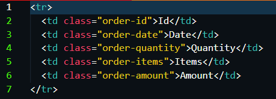
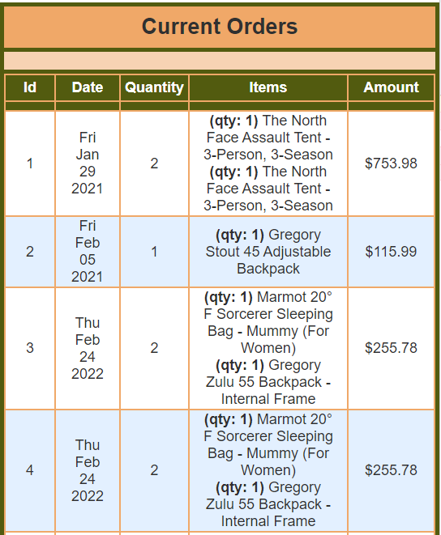
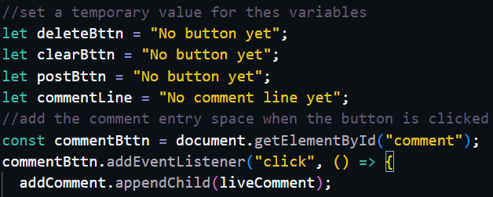
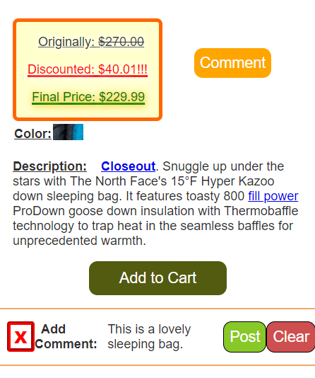

Example #1 Link
HTML Template

Example #2 Link
JavaScript
 Planning in Small Steps
4. using a divide and conquer approach to design solutions for programming problems,
(Student spends adequate time in planning their projects before they start coding. Student is adept in taking a complex problem and breaking it down into small trivial steps.)
Like many other things in life, programming can be overwhelming. I think the only way to really be successful at in overcoming complex problems is to take things one small step at a time. The way our SleepOutsite task cards were broken up into small pieces is a good example of that and I followed that pattern in takling the different coding problems that I faced.
Example #1
The first example of me breaking a big problem down into little steps was how learned to make templates and take small pieces of a web page that can be placed in the overall page and reused in small bits. I used that principle as I worked on the (Team8Authentication card) individually to get it done before we met as a team. Everything that needed to be done in the card became overwhelming, so I broke things down and did one step at a time, including making a template for the list of orders that was sent back to display on the admin page.
Example #2
The second example of me making plans and breaking things down into small steps comes from the Product Comments feature. I broke the process of building that feature down into one step at a time and it came together nicely. First I created a comments button with HTML on the product details page, because I had to have a button to start the process. I then added a method that added the comment input to the page when the comment button was pushed. I then made three buttons within the comment field: delete (which removed the input field), clear (which cleared the comment input field), and post (which posted the comments to the page). I then worked on making each button do the function it was intended for one at a time. In the end I had a nice comments feature.